2023 Higher Computing Science marking instructions
Source: Scottish Qualifications Authority (SQA) / Qualifications Scotland. This is a StemInteract HTML companion, not an official HTML edition. Selectable text is supplied alongside original page images. Use the images or original PDF for equations, powers, fractions, vector notation, tables and diagrams; text extraction cannot fully preserve mathematical layout.
Jump to a question
PDF page 1
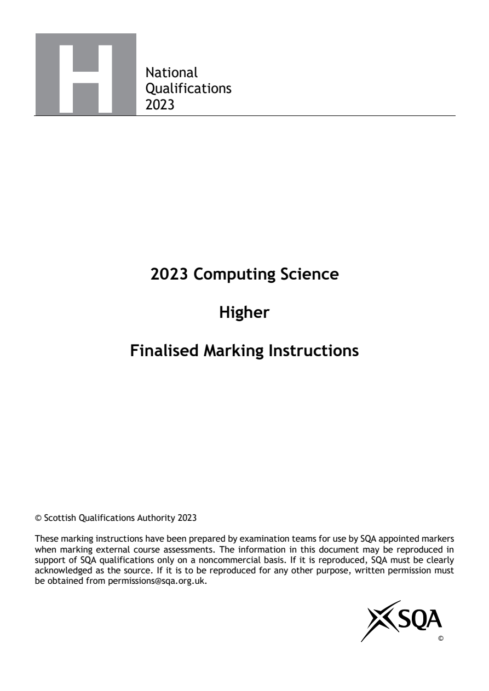
Selectable page text
National
Qualifications
2023
2023 Computing Science
Higher
Finalised Marking Instructions
© Scottish Qualifications Authority 2023
These marking instructions have been prepared by examination teams for use by SQA appointed markers
when marking external course assessments. The information in this document may be reproduced in
support of SQA qualifications only on a noncommercial basis. If it is reproduced, SQA must be clearly
acknowledged as the source. If it is to be reproduced for any other purpose, written permission must
be obtained from permissions@sqa.org.uk.
©PDF page 2
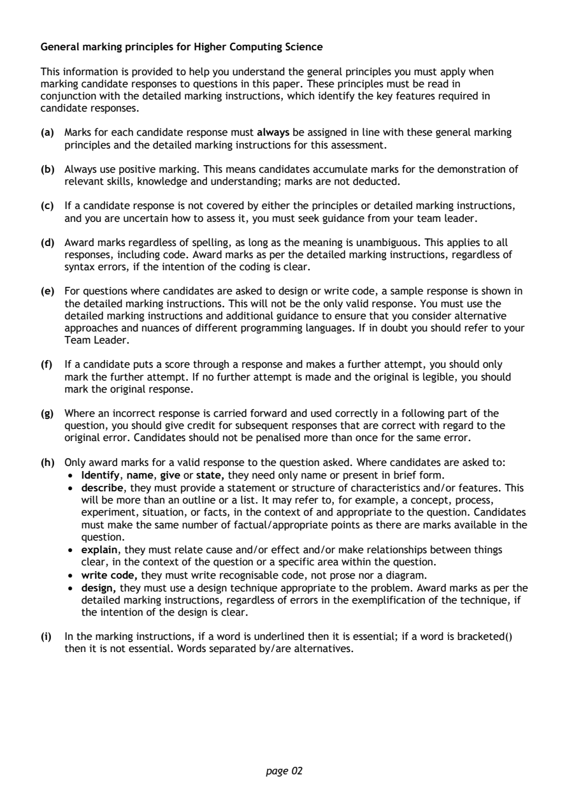
Selectable page text
General marking principles for Higher Computing Science
This information is provided to help you understand the general principles you must apply when
marking candidate responses to questions in this paper. These principles must be read in
conjunction with the detailed marking instructions, which identify the key features required in
candidate responses.
(a) Marks for each candidate response must always be assigned in line with these general marking
principles and the detailed marking instructions for this assessment.
(b) Always use positive marking. This means candidates accumulate marks for the demonstration of
relevant skills, knowledge and understanding; marks are not deducted.
(c) If a candidate response is not covered by either the principles or detailed marking instructions,
and you are uncertain how to assess it, you must seek guidance from your team leader.
(d) Award marks regardless of spelling, as long as the meaning is unambiguous. This applies to all
responses, including code. Award marks as per the detailed marking instructions, regardless of
syntax errors, if the intention of the coding is clear.
(e) For questions where candidates are asked to design or write code, a sample response is shown in
the detailed marking instructions. This will not be the only valid response. You must use the
detailed marking instructions and additional guidance to ensure that you consider alternative
approaches and nuances of different programming languages. If in doubt you should refer to your
Team Leader.
(f) If a candidate puts a score through a response and makes a further attempt, you should only
mark the further attempt. If no further attempt is made and the original is legible, you should
mark the original response.
(g) Where an incorrect response is carried forward and used correctly in a following part of the
question, you should give credit for subsequent responses that are correct with regard to the
original error. Candidates should not be penalised more than once for the same error.
(h) Only award marks for a valid response to the question asked. Where candidates are asked to:
• Identify, name, give or state, they need only name or present in brief form.
• describe, they must provide a statement or structure of characteristics and/or features. This
will be more than an outline or a list. It may refer to, for example, a concept, process,
experiment, situation, or facts, in the context of and appropriate to the question. Candidates
must make the same number of factual/appropriate points as there are marks available in the
question.
• explain, they must relate cause and/or effect and/or make relationships between things
clear, in the context of the question or a specific area within the question.
• write code, they must write recognisable code, not prose nor a diagram.
• design, they must use a design technique appropriate to the problem. Award marks as per the
detailed marking instructions, regardless of errors in the exemplification of the technique, if
the intention of the design is clear.
(i) In the marking instructions, if a word is underlined then it is essential; if a word is bracketed()
then it is not essential. Words separated by/are alternatives.
page 02PDF page 3
Question 1Question 2Question 3Question 4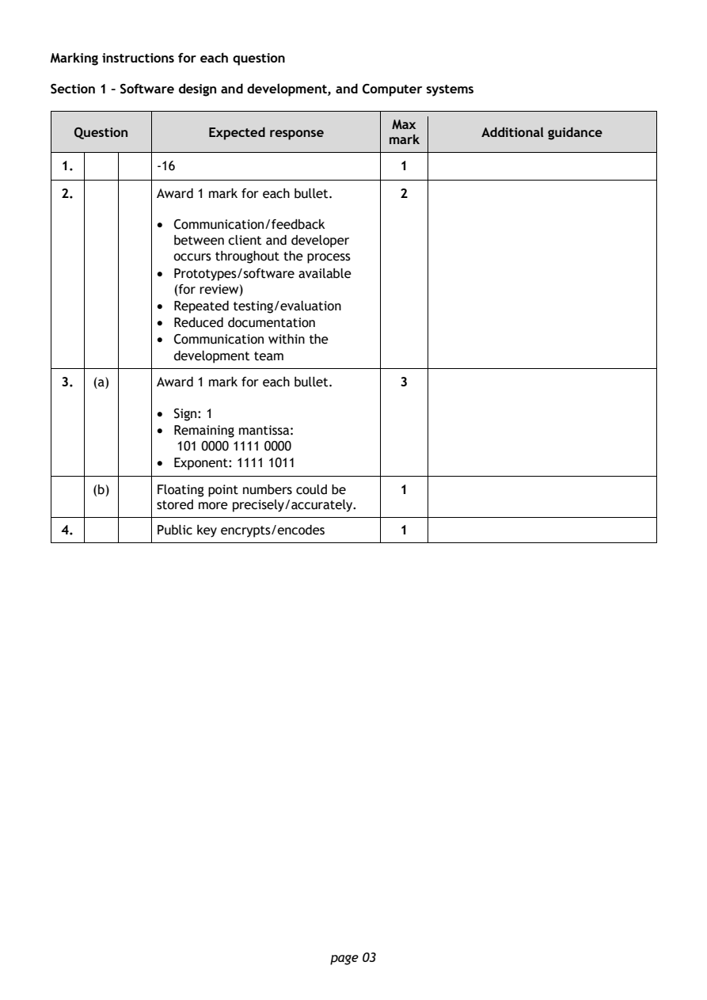
Selectable page text
Marking instructions for each question
Section 1 – Software design and development, and Computer systems
Max
Question Expected response Additional guidance
mark
1. -16 1
2. Award 1 mark for each bullet. 2
• Communication/feedback
between client and developer
occurs throughout the process
• Prototypes/software available
(for review)
• Repeated testing/evaluation
• Reduced documentation
• Communication within the
development team
3. (a) Award 1 mark for each bullet. 3
• Sign: 1
• Remaining mantissa:
101 0000 1111 0000
• Exponent: 1111 1011
(b) Floating point numbers could be 1
stored more precisely/accurately.
4. Public key encrypts/encodes 1
page 03PDF page 4
Question 5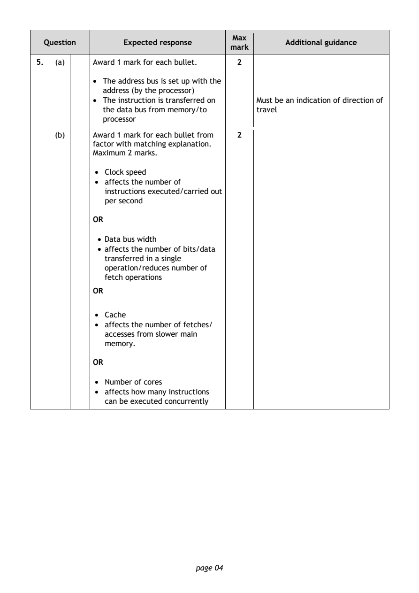
Selectable page text
Max
Question Expected response Additional guidance
mark
5. (a) Award 1 mark for each bullet. 2
• The address bus is set up with the
address (by the processor)
• The instruction is transferred on Must be an indication of direction of
the data bus from memory/to travel
processor
(b) Award 1 mark for each bullet from 2
factor with matching explanation.
Maximum 2 marks.
• Clock speed
• affects the number of
instructions executed/carried out
per second
OR
• Data bus width
• affects the number of bits/data
transferred in a single
operation/reduces number of
fetch operations
OR
• Cache
• affects the number of fetches/
accesses from slower main
memory.
OR
• Number of cores
• affects how many instructions
can be executed concurrently
page 04PDF page 5
Question 6Question 7Question 8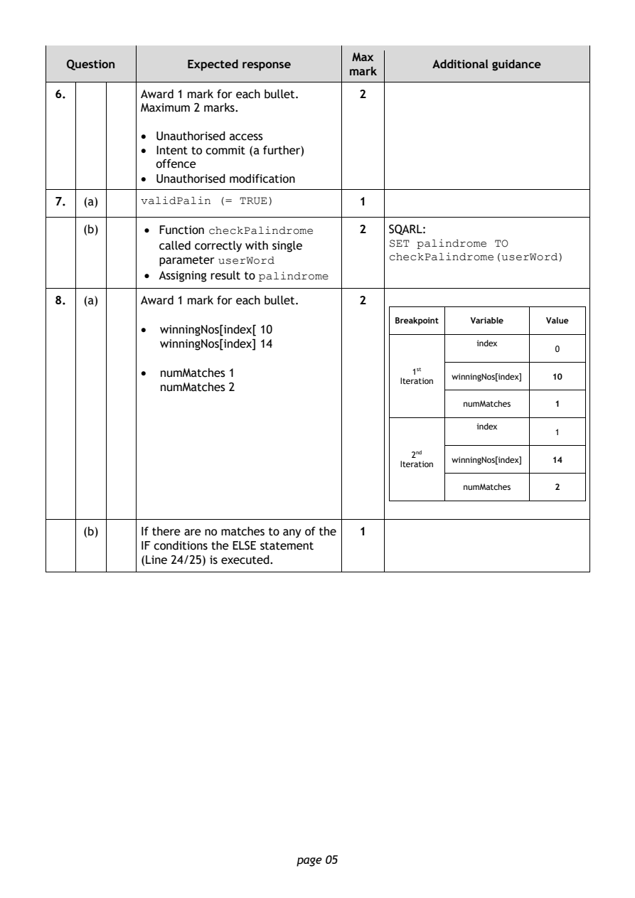
Selectable page text
Max
Question Expected response Additional guidance
mark
6. Award 1 mark for each bullet. 2
Maximum 2 marks.
• Unauthorised access
• Intent to commit (a further)
offence
• Unauthorised modification
7. (a) 1
validPalin (= TRUE)
(b) • Function 2 SQARL:
checkPalindrome
called correctly with single SET palindrome TO
parameter checkPalindrome(userWord)
userWord
• Assigning result to
palindrome
8. (a) Award 1 mark for each bullet. 2
Breakpoint Variable Value
• winningNos[index[ 10
winningNos[index] 14 index
0
• numMatches 1 1st
winningNos[index] 10
Iteration
numMatches 2
numMatches 1
index
1
2nd
winningNos[index] 14
Iteration
numMatches 2
(b) If there are no matches to any of the 1
IF conditions the ELSE statement
(Line 24/25) is executed.
page 05PDF page 6
Question 9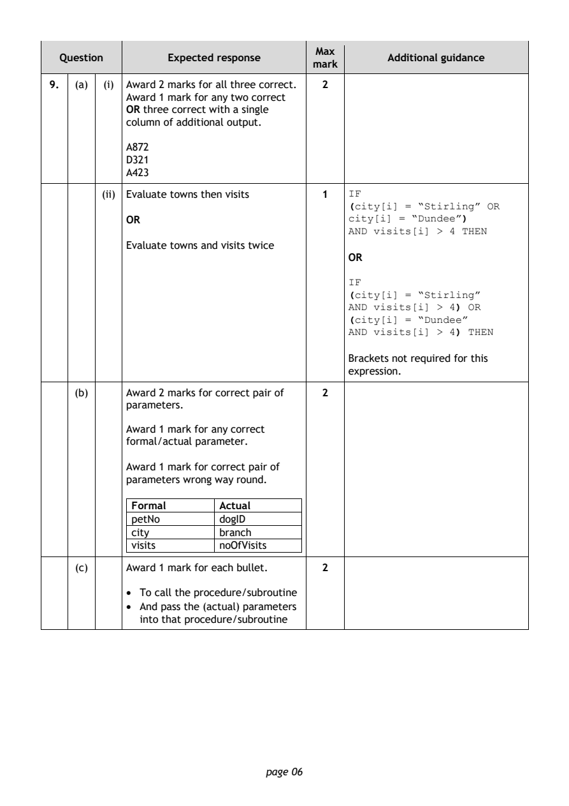
Selectable page text
Max
Question Expected response Additional guidance
mark
9. (a) (i) Award 2 marks for all three correct. 2
Award 1 mark for any two correct
OR three correct with a single
column of additional output.
A872
D321
A423
(ii) Evaluate towns then visits 1
IF
(city[i] = “Stirling” OR
OR city[i] = “Dundee”)
AND visits[i] > 4 THEN
Evaluate towns and visits twice
OR
IF
(city[i] = “Stirling”
AND visits[i] > 4) OR
(city[i] = “Dundee”
AND visits[i] > 4) THEN
Brackets not required for this
expression.
(b) Award 2 marks for correct pair of 2
parameters.
Award 1 mark for any correct
formal/actual parameter.
Award 1 mark for correct pair of
parameters wrong way round.
Formal Actual
petNo dogID
city branch
visits noOfVisits
(c) Award 1 mark for each bullet. 2
• To call the procedure/subroutine
• And pass the (actual) parameters
into that procedure/subroutine
page 06PDF page 7
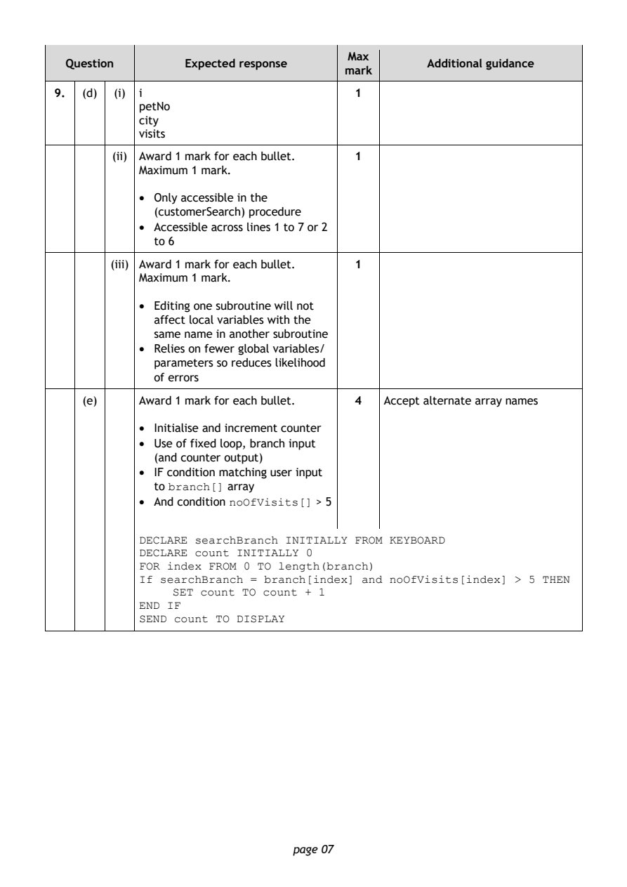
Selectable page text
Max
Question Expected response Additional guidance
mark
9. (d) (i) i 1
petNo
city
visits
(ii) Award 1 mark for each bullet. 1
Maximum 1 mark.
• Only accessible in the
(customerSearch) procedure
• Accessible across lines 1 to 7 or 2
to 6
(iii) Award 1 mark for each bullet. 1
Maximum 1 mark.
• Editing one subroutine will not
affect local variables with the
same name in another subroutine
• Relies on fewer global variables/
parameters so reduces likelihood
of errors
(e) Award 1 mark for each bullet. 4 Accept alternate array names
• Initialise and increment counter
• Use of fixed loop, branch input
(and counter output)
• IF condition matching user input
to array
branch[]
• And condition > 5
noOfVisits[]
DECLARE searchBranch INITIALLY FROM KEYBOARD
DECLARE count INITIALLY 0
FOR index FROM 0 TO length(branch)
If searchBranch = branch[index] and noOfVisits[index] > 5 THEN
SET count TO count + 1
END IF
SEND count TO DISPLAY
page 07PDF page 8
Question 10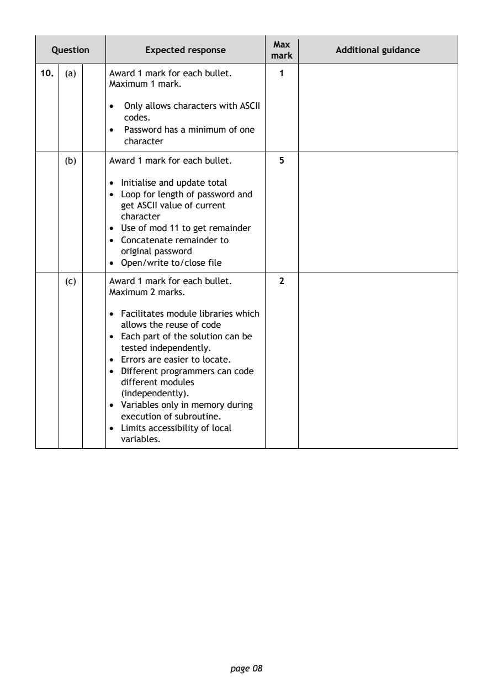
Selectable page text
Max
Question Expected response Additional guidance
mark
10. (a) Award 1 mark for each bullet. 1
Maximum 1 mark.
• Only allows characters with ASCII
codes.
• Password has a minimum of one
character
(b) Award 1 mark for each bullet. 5
• Initialise and update total
• Loop for length of password and
get ASCII value of current
character
• Use of mod 11 to get remainder
• Concatenate remainder to
original password
• Open/write to/close file
(c) Award 1 mark for each bullet. 2
Maximum 2 marks.
• Facilitates module libraries which
allows the reuse of code
• Each part of the solution can be
tested independently.
• Errors are easier to locate.
• Different programmers can code
different modules
(independently).
• Variables only in memory during
execution of subroutine.
• Limits accessibility of local
variables.
page 08PDF page 9
Question 11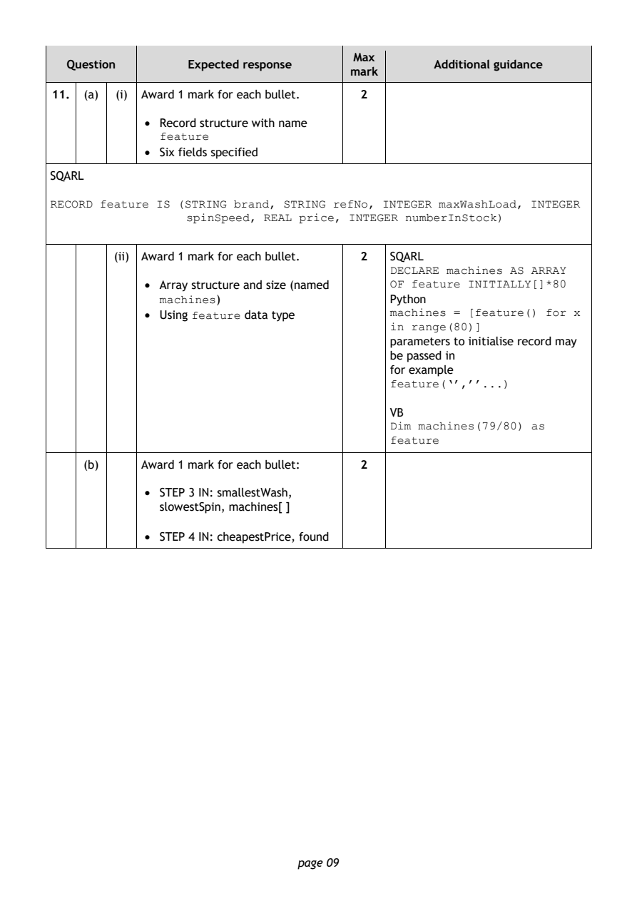
Selectable page text
Max
Question Expected response Additional guidance
mark
11. (a) (i) Award 1 mark for each bullet. 2
• Record structure with name
feature
• Six fields specified
SQARL
RECORD feature IS (STRING brand, STRING refNo, INTEGER maxWashLoad, INTEGER
spinSpeed, REAL price, INTEGER numberInStock)
(ii) Award 1 mark for each bullet. 2 SQARL
DECLARE machines AS ARRAY
• Array structure and size (named
OF feature INITIALLY[]*80
) Python
machines
• Using feature data type machines = [feature() for x
in range(80)]
parameters to initialise record may
be passed in
for example
feature(‘’,’’...)
VB
Dim machines(79/80) as
feature
(b) Award 1 mark for each bullet: 2
• STEP 3 IN: smallestWash,
slowestSpin, machines[ ]
• STEP 4 IN: cheapestPrice, found
page 09PDF page 10
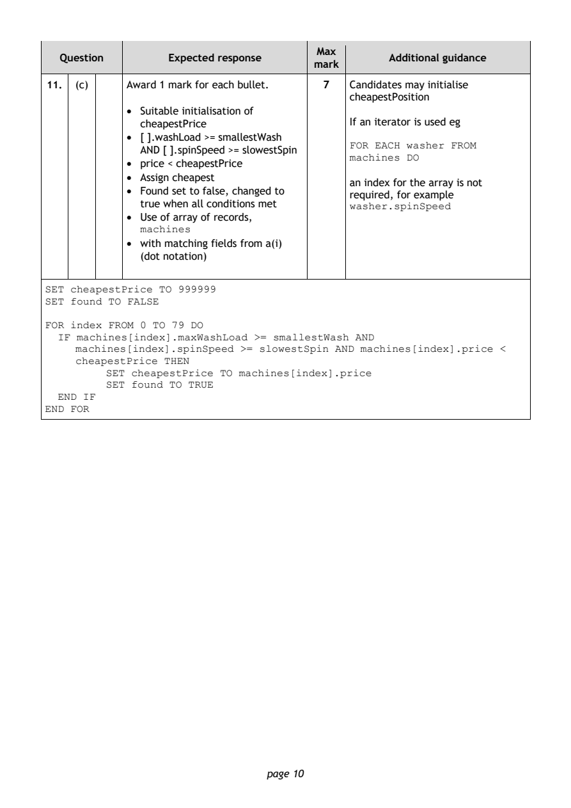
Selectable page text
Max
Question Expected response Additional guidance
mark
11. (c) Award 1 mark for each bullet. 7 Candidates may initialise
cheapestPosition
• Suitable initialisation of
cheapestPrice If an iterator is used eg
• [ ].washLoad >= smallestWash
AND [ ].spinSpeed >= slowestSpin FOR EACH washer FROM
• price < cheapestPrice machines DO
• Assign cheapest
an index for the array is not
• Found set to false, changed to
required, for example
true when all conditions met
washer.spinSpeed
• Use of array of records,
machines
• with matching fields from a(i)
(dot notation)
SET cheapestPrice TO 999999
SET found TO FALSE
FOR index FROM 0 TO 79 DO
IF machines[index].maxWashLoad >= smallestWash AND
machines[index].spinSpeed >= slowestSpin AND machines[index].price <
cheapestPrice THEN
SET cheapestPrice TO machines[index].price
SET found TO TRUE
END IF
END FOR
page 10PDF page 11
Question 12Question 13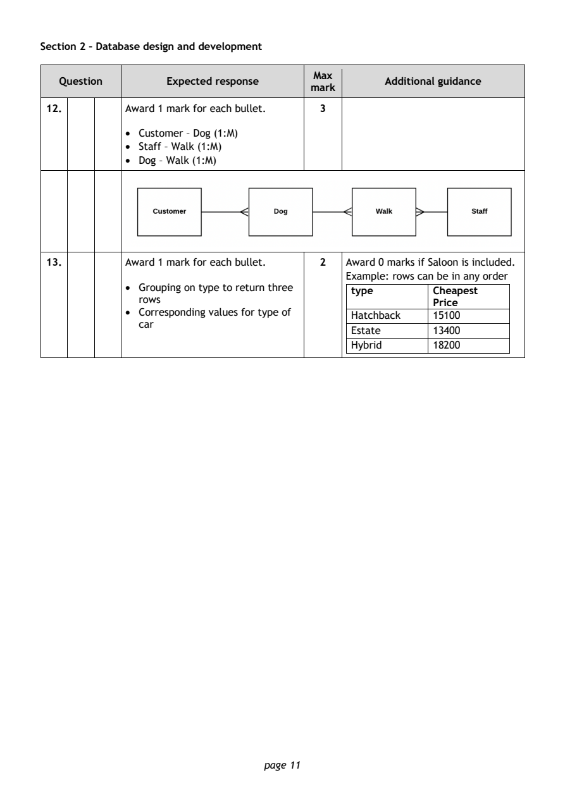
Selectable page text
Section 2 – Database design and development
Max
Question Expected response Additional guidance
mark
12. Award 1 mark for each bullet. 3
• Customer – Dog (1:M)
• Staff – Walk (1:M)
• Dog – Walk (1:M)
13. Award 1 mark for each bullet. 2 Award 0 marks if Saloon is included.
Example: rows can be in any order
• Grouping on type to return three
type Cheapest
rows
Price
• Corresponding values for type of
Hatchback 15100
car
Estate 13400
Hybrid 18200
page 11PDF page 12
Question 14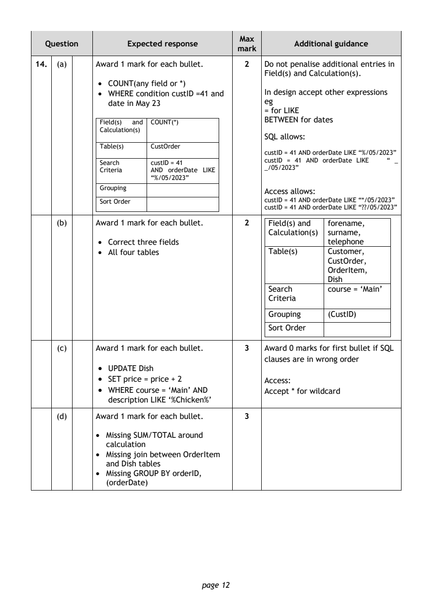
Selectable page text
Max
Question Expected response Additional guidance
mark
14. (a) Award 1 mark for each bullet. 2 Do not penalise additional entries in
Field(s) and Calculation(s).
• COUNT(any field or *)
• WHERE condition custID =41 and In design accept other expressions
date in May 23 eg
= for LIKE
BETWEEN for dates
Field(s) and COUNT(*)
Calculation(s)
SQL allows:
Table(s) CustOrder
custID = 41 AND orderDate LIKE “%/05/2023”
custID = 41 AND orderDate LIKE “ _
Search custID = 41
_/05/2023”
Criteria AND orderDate LIKE
“ %/05/2023”
Grouping
Access allows:
Sort Order custID = 41 AND orderDate LIKE “*/05/2023”
c ustID = 41 AND orderDate LIKE “??/05/2023”
(b) Award 1 mark for each bullet. 2 Field(s) and forename,
Calculation(s) surname,
• Correct three fields telephone
• All four tables Table(s) Customer,
CustOrder,
OrderItem,
Dish
Search course = ‘Main’
Criteria
Grouping (CustID)
Sort Order
(c) Award 1 mark for each bullet. 3 Award 0 marks for first bullet if SQL
clauses are in wrong order
• UPDATE Dish
• SET price = price + 2 Access:
• WHERE course = ‘Main’ AND Accept * for wildcard
description LIKE ‘%Chicken%’
(d) Award 1 mark for each bullet. 3
• Missing SUM/TOTAL around
calculation
• Missing join between OrderItem
and Dish tables
• Missing GROUP BY orderID,
(orderDate)
page 12PDF page 13
Question 15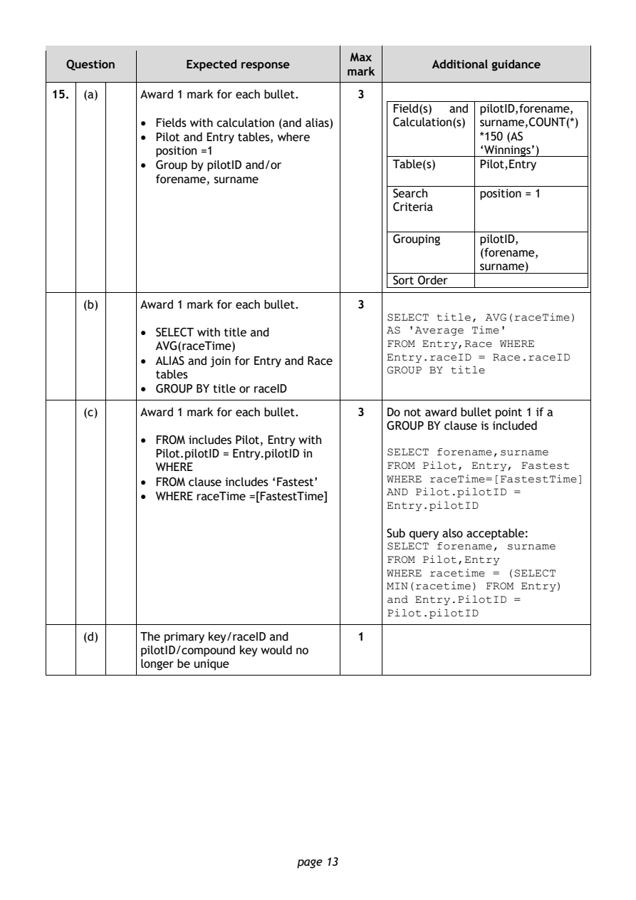
Selectable page text
Max
Question Expected response Additional guidance
mark
15. (a) Award 1 mark for each bullet. 3
Field(s) and pilotID,forename,
• Fields with calculation (and alias) Calculation(s) surname,COUNT(*)
• Pilot and Entry tables, where *150 (AS
position =1 ‘Winnings’)
• Group by pilotID and/or Table(s) Pilot,Entry
forename, surname
Search position = 1
Criteria
Grouping pilotID,
(forename,
surname)
Sort Order
(b) Award 1 mark for each bullet. 3
SELECT title, AVG(raceTime)
• SELECT with title and AS 'Average Time'
AVG(raceTime) FROM Entry,Race WHERE
• ALIAS and join for Entry and Race Entry.raceID = Race.raceID
tables G ROUP BY title
• GROUP BY title or raceID
(c) Award 1 mark for each bullet. 3 Do not award bullet point 1 if a
GROUP BY clause is included
• FROM includes Pilot, Entry with
Pilot.pilotID = Entry.pilotID in SELECT forename,surname
WHERE FROM Pilot, Entry, Fastest
• FROM clause includes ‘Fastest’ WHERE raceTime=[FastestTime]
• WHERE raceTime =[FastestTime] AND Pilot.pilotID =
Entry.pilotID
Sub query also acceptable:
SELECT forename, surname
FROM Pilot,Entry
WHERE racetime = (SELECT
MIN(racetime) FROM Entry)
and Entry.PilotID =
Pilot.pilotID
(d) The primary key/raceID and 1
pilotID/compound key would no
longer be unique
page 13PDF page 14
Question 16Question 17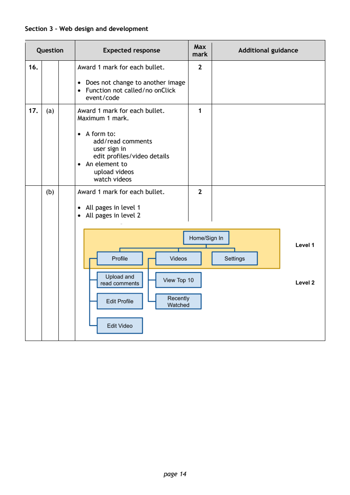
Selectable page text
Section 3 – Web design and development
Max
Question Expected response Additional guidance
mark
16. Award 1 mark for each bullet. 2
• Does not change to another image
• Function not called/no onClick
event/code
17. (a) Award 1 mark for each bullet. 1
Maximum 1 mark.
• A form to:
add/read comments
user sign in
edit profiles/video details
• An element to
upload videos
watch videos
(b) Award 1 mark for each bullet. 2
• All pages in level 1
• All pages in level 2
page 14PDF page 15
Question 18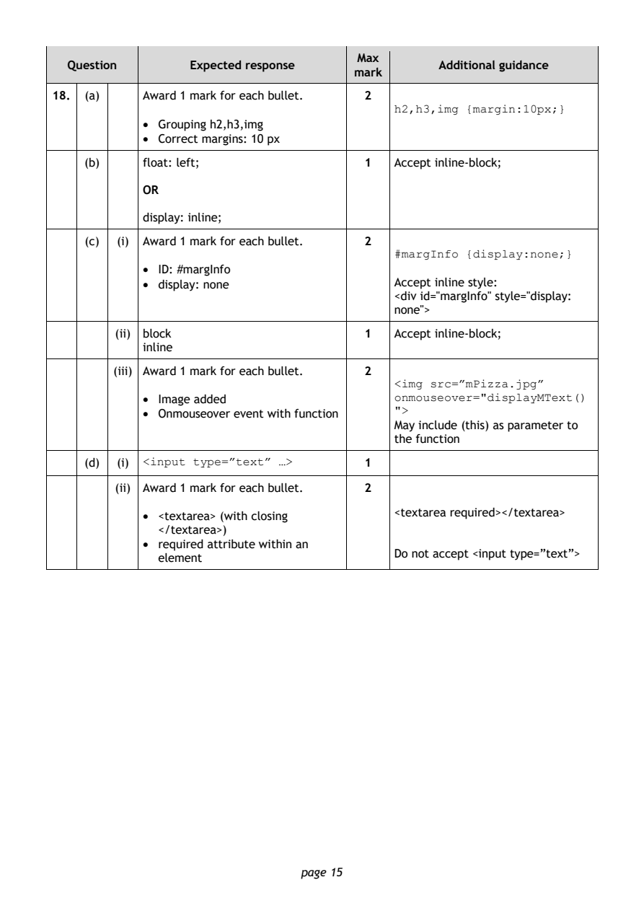
Selectable page text
Max
Question Expected response Additional guidance
mark
18. (a) Award 1 mark for each bullet. 2
h2,h3,img {margin:10px;}
• Grouping h2,h3,img
• Correct margins: 10 px
(b) float: left; 1 Accept inline-block;
OR
display: inline;
(c) (i) Award 1 mark for each bullet. 2
#margInfo {display:none;}
• ID: #margInfo
• display: none Accept inline style:
<div id="margInfo" style="display:
none">
(ii) block 1 Accept inline-block;
inline
(iii) Award 1 mark for each bullet. 2
<img src=”mPizza.jpg”
• Image added onmouseover="displayMText()
• Onmouseover event with function ">
May include (this) as parameter to
the function
(d) (i) 1
<input type=”text” …>
(ii) Award 1 mark for each bullet. 2
<textarea required></textarea>
• <textarea> (with closing
</textarea>)
• required attribute within an
Do not accept <input type=”text”>
element
page 15PDF page 16
Question 19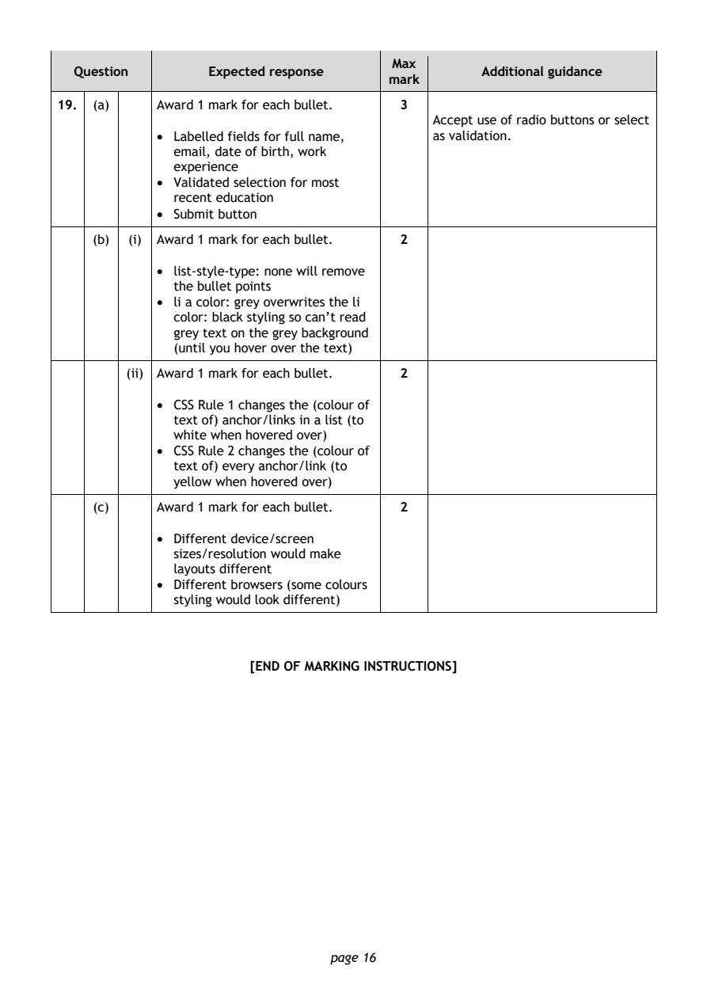
Selectable page text
Max
Question Expected response Additional guidance
mark
19. (a) Award 1 mark for each bullet. 3
Accept use of radio buttons or select
• Labelled fields for full name, as validation.
email, date of birth, work
experience
• Validated selection for most
recent education
• Submit button
(b) (i) Award 1 mark for each bullet. 2
• list-style-type: none will remove
the bullet points
• li a color: grey overwrites the li
color: black styling so can’t read
grey text on the grey background
(until you hover over the text)
(ii) Award 1 mark for each bullet. 2
• CSS Rule 1 changes the (colour of
text of) anchor/links in a list (to
white when hovered over)
• CSS Rule 2 changes the (colour of
text of) every anchor/link (to
yellow when hovered over)
(c) Award 1 mark for each bullet. 2
• Different device/screen
sizes/resolution would make
layouts different
• Different browsers (some colours
styling would look different)
[END OF MARKING INSTRUCTIONS]
page 16